Review · Round 6 · the chapters · the whole film
Chapter 8: Last of Men, the draft
The latest draft, acted and painted, 5:18 at 12 drawings a second, over the same sound as the storyboard. Under the dome the light is the screens' and the violet canopy's. Roal's long speech goes to a science plate, a ladder from life to man to machine to pure force. Outside, the plant rises through one long camera move from noon to night.
Notes: pause anywhere, type, and press Enter (or Pin) to pin a note to that moment. They stay in this browser. Copy notes puts them on the clipboard as text, timed and with their shot, for the decision sheet or a message.
Notes
The shots
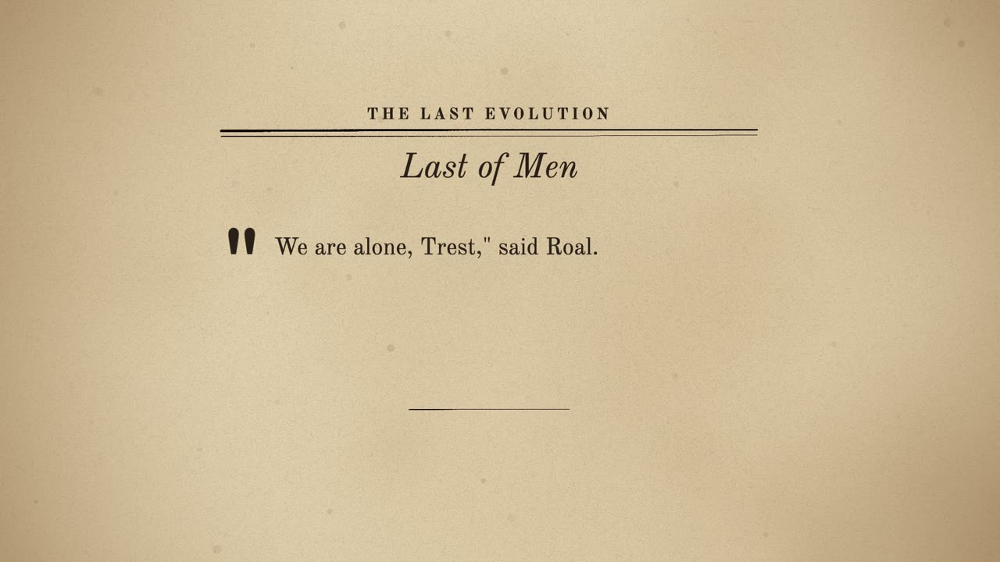
A The chapter's page 0:00–0:06
seenThe pulp page, Last of Men, the opening words under a drop cap.
cameraa slow push
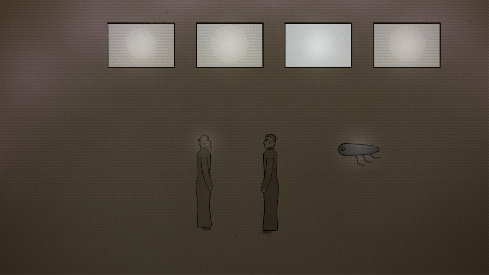
B Alone 0:06–0:29
seenInside the black dome; Roal and Trest in the screens' light, F-2 floating beside them; the violet glow overhead.
camerain slowly to the two men
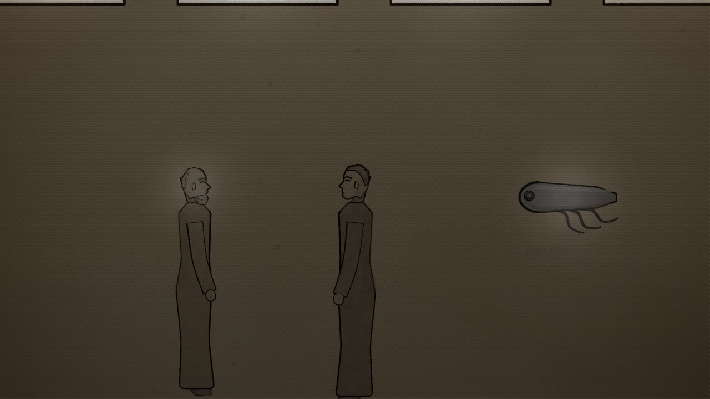
C Is it worth it? 0:29–0:41
seenTrest, close.
cameramoves to Trest
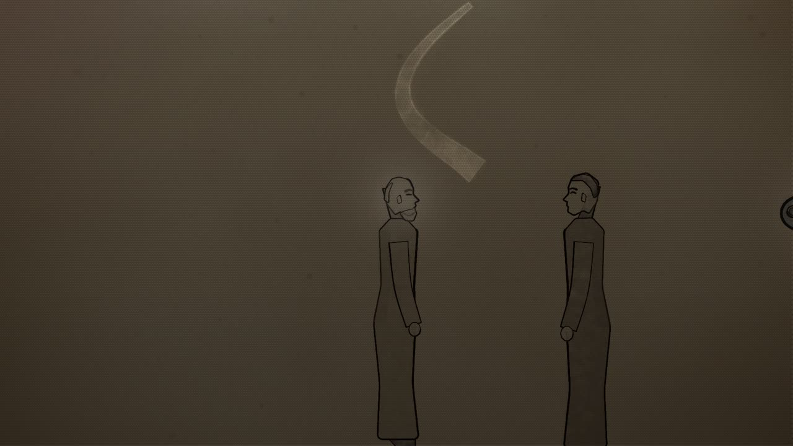
D A parasite 0:41–1:12
seenRoal, his eyes dreaming; a loose curl of thought.
cameraa slow push on Roal
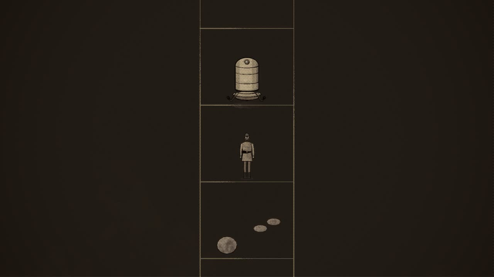
E A last evolution 1:12–1:49
seenA plate in pale ink, a ladder up its middle; at the foot a cell and a plant, then a man, then a machine of the family form.
camerarises up the ladder
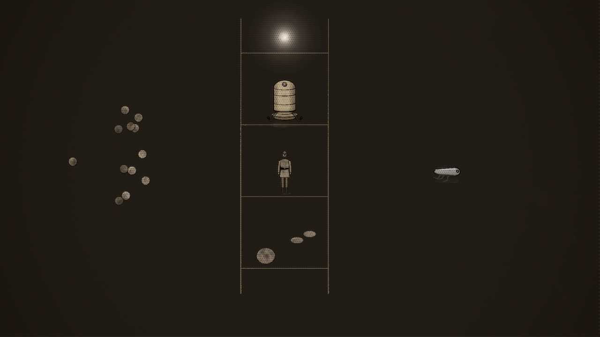
F Not by chance 1:49–2:11
seenThe plate; drops of chemicals drifting and joining at random; beside them a small machine, F-2, making a copy of itself.
cameraacross the plate
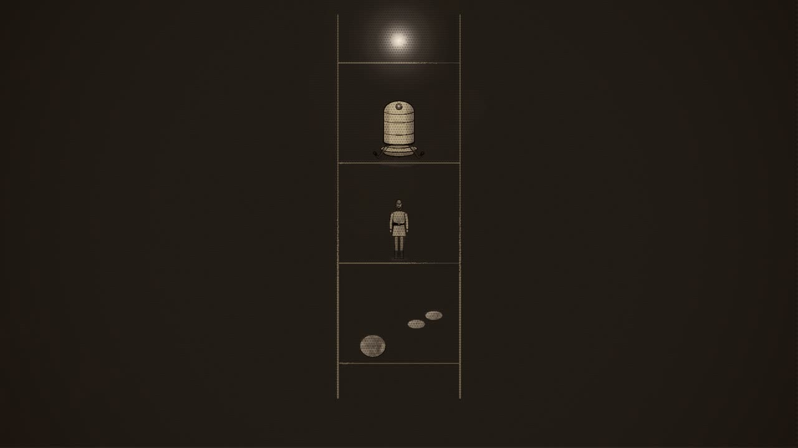
G The parasite removed 2:11–2:32
seenThe ladder again; the man's rung.
cameraholds on the ladder
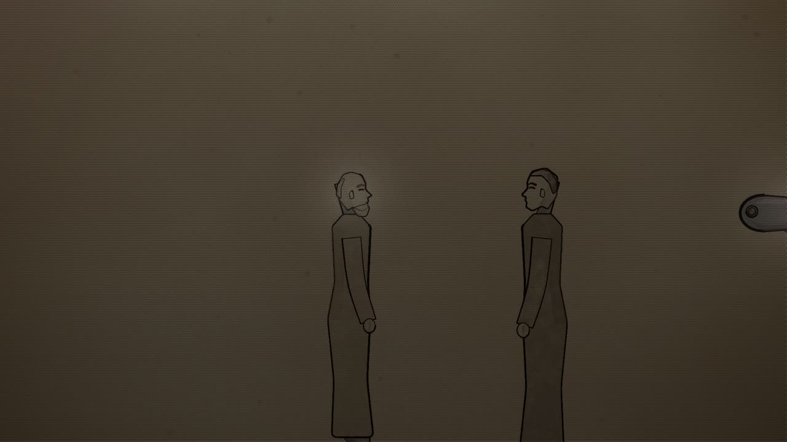
H Better 2:32–2:43
seenRoal, dreaming, in the screens' light; Trest beside him.
cameraclose on Roal
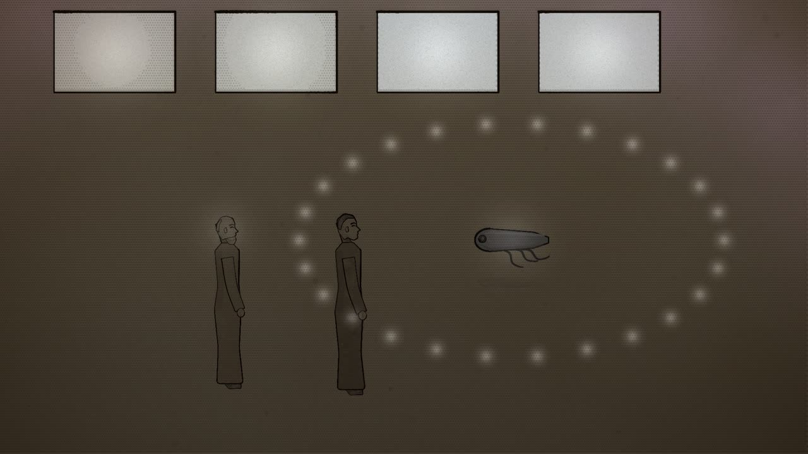
I We, your heirs 2:43–3:37
seenF-2 before the two men; rings of thought going out from it.
cameraholds F-2, the men listening
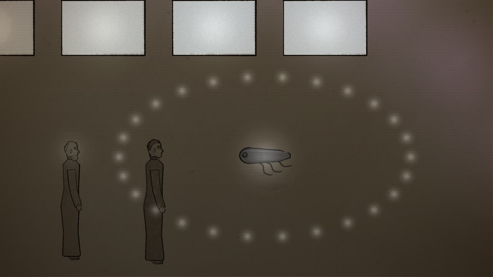
J I go 3:37–3:49
seenF-2 turning to the dark wall of the dome.
camerafollows F-2 to the wall
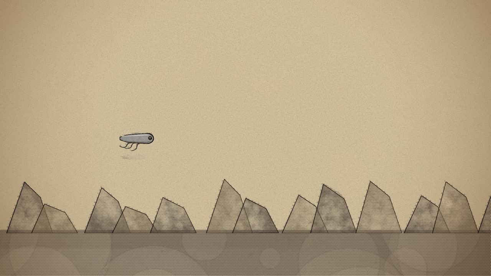
K The plane of force 3:49–4:04
seenOutside, the twisted, massed rocks under clear sunlight, the black dome behind; F-2 floating out.
camerafollows F-2 out and over the rocks
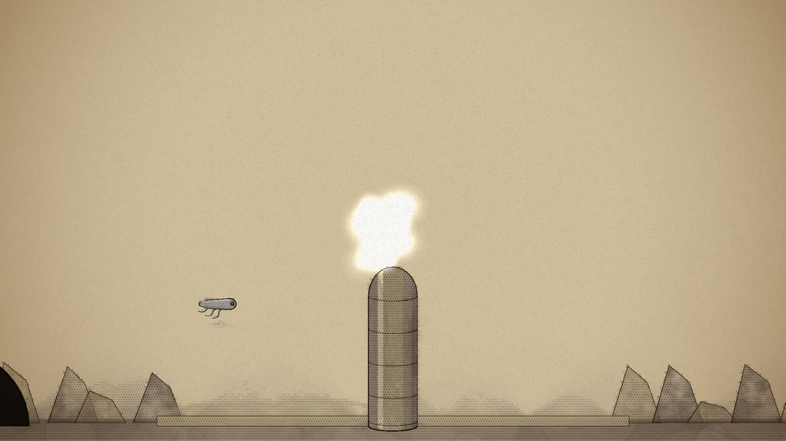
L The power plant grows 4:04–4:27
seenThe smoothed plane; F-2's forces arcing; the plant rising in rings of metal.
camerapulls back and tilts up as it rises
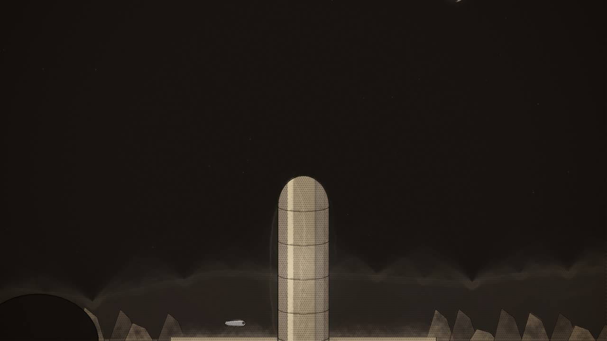
M Under a crescent moon 4:27–5:00
seenNight; the power plant, five hundred feet, its blunt dome against the stars and a crescent moon, faintly luminescent.
cameraa slow tilt up its height
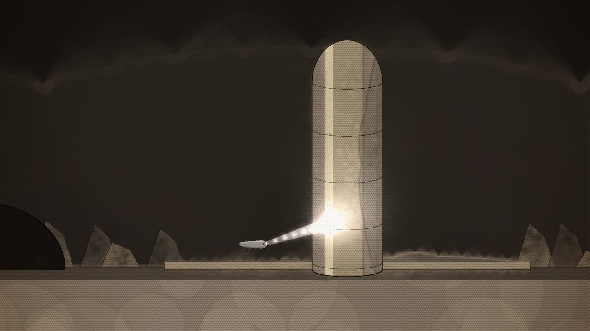
N The livid beam 5:00–5:18
seenF-2 small at the plant's foot.
cameraholds